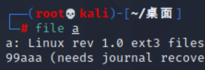
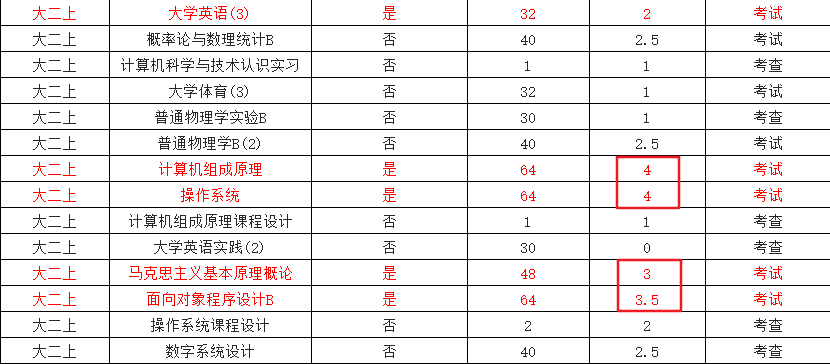

xiaoxiaoNote
软考终于结束了，晚上去跑5公里庆祝一下^_^（好久没跑了，不知道还跑不跑得动）。至于软考的结果怎样不好说，就算上午的选择题侥幸能及格，下午的大题也很难过吧（毕竟下午的大题我就在上午考完后只用中午休息的时间学了一个小时，虽然效率极高，但毕竟只有一个小时），简而言之那便是——能过就是奇迹。
没事，虽然过不了，但收获还是挺大的，至少我对这网络工程师的考察内容已经有了一个比较清晰的框架，之后的学习中只需要按这个框架逐步地积累知识就可以了。
好了，先不管这软考的事了，丢到寒假再准备吧，下周二就是明月网安招新赛了，这周末挤点时间出来打点攻防世界上的题目吧， ε=(´ο｀*)))唉，作业好多啊，抄都抄不完。
ok，最后把想要做的事记录一下吧，以免忘记，按重要程度排序：
1、ctf招新赛（所以最近我的博客应该都会有题目更新）
2、java期中考试，得抓紧复习
3、装载&见识一下kali Linux操作系统（不得不说，这红色的字确实帅）

4、期末备考（及格万岁！）

5、学习网络工程师相关知识，通过这段时间对网络工程师的备考来看，不得不说这些知识对我来说是很有用的。
6、英语六级（寒假再看吧）